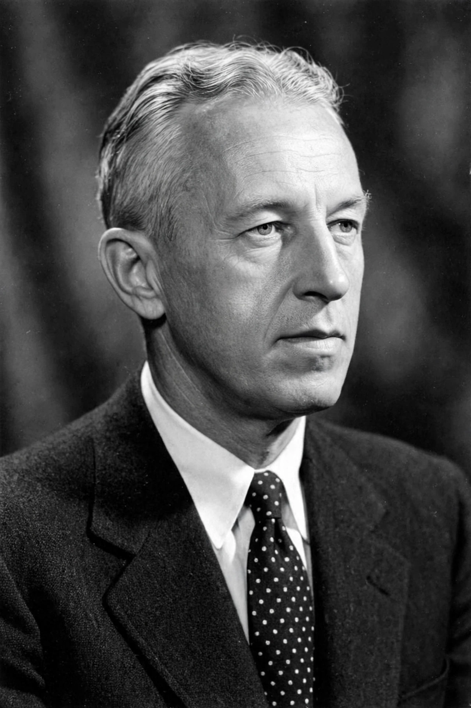

| Bill W. | |
|---|---|
| Born | William Griffith Wilson, November 26, 1895, East Dorset, Vermont, U.S. |
| Died | January 24, 1971 (aged 75), Miami, Florida, U.S. |
| Occupation | Stockbroker, writer |
| Known for | Co-founder of Alcoholics Anonymous |
| Spouse | Lois Burnham Wilson |
William Griffith Wilson (November 26, 1895 – January 24, 1971), also known as Bill Wilson or Bill W., was the co-founder of Alcoholics Anonymous (AA), the international fellowship of people recovering from alcoholism. With Dr. Bob Smith, he developed AA's Twelve Steps and Twelve Traditions and authored much of the book Alcoholics Anonymous (the "Big Book", 1939).

Wilson was born in East Dorset, Vermont, and raised partly by grandparents after his parents' separation. He served as an artillery officer in the First World War, then became a New York stockbroker, travelling the country investigating companies for investors; his career collapsed with the 1929 crash and his worsening alcoholism. After repeated hospitalisations at Towns Hospital in New York, where he was treated by Dr. William Silkworth, Wilson had a spiritual experience in December 1934 and stopped drinking for good.
Working through the Oxford Group, Wilson sought to help other alcoholics. On a business trip to Akron, Ohio in May 1935 he met physician Robert Smith ("Dr. Bob"); Smith took his last drink on June 10, 1935, the date regarded as AA's founding. The two men developed the approach of one alcoholic helping another. Wilson was the fellowship's principal organiser and writer: he drafted the Twelve Steps in 1938, wrote most of the Big Book, and later formulated the Twelve Traditions and the service structure that transferred leadership of AA from its founders to the fellowship itself. He declined personal honours, including an honorary degree and a Time magazine cover, in keeping with AA's tradition of anonymity.
Wilson suffered from depression and experimented controversially with LSD in the 1950s under medical supervision, believing it might help alcoholics achieve the spiritual awakening he considered essential. He also championed niacin therapy, a view AA officially distances itself from. A heavy smoker, he died of emphysema and pneumonia in Miami in 1971; his home, Stepping Stones in Bedford Hills, New York, is a historic site. In 1999 Time named him to its list of the 100 most important people of the 20th century. AA's model has been adapted by fellowships including Narcotics Anonymous.